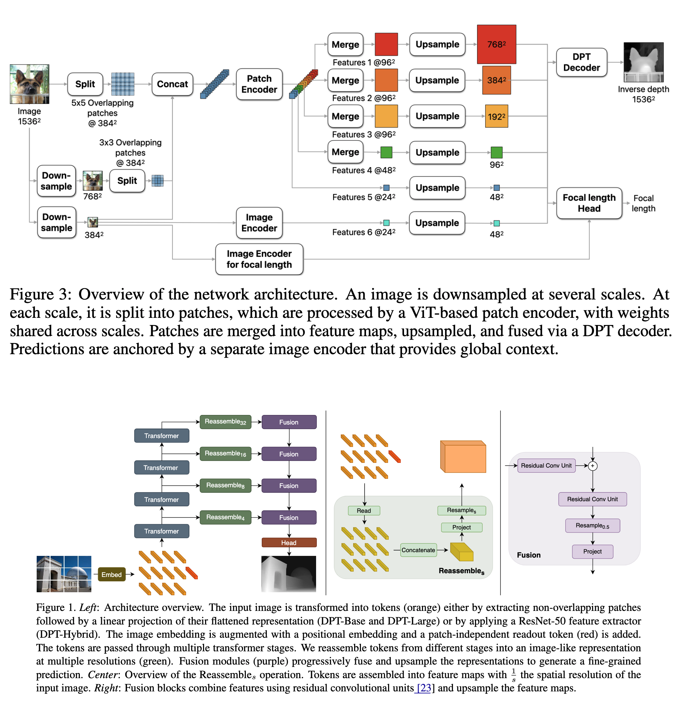
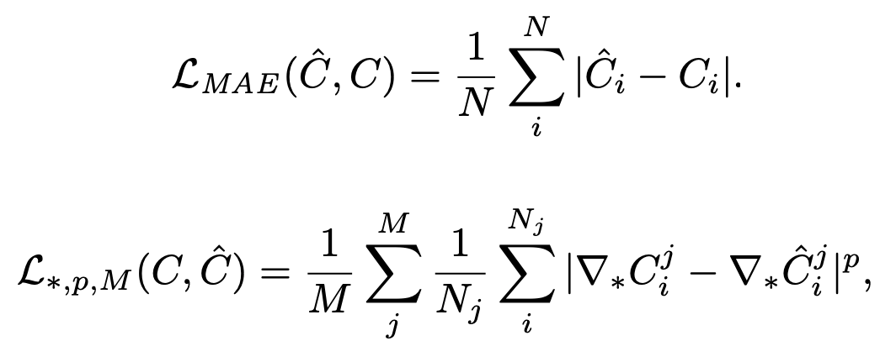
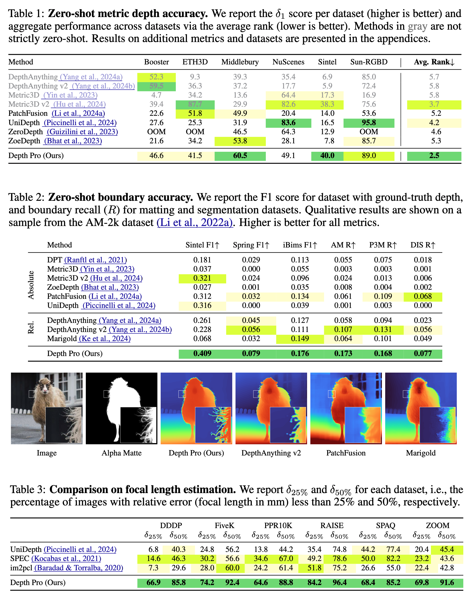
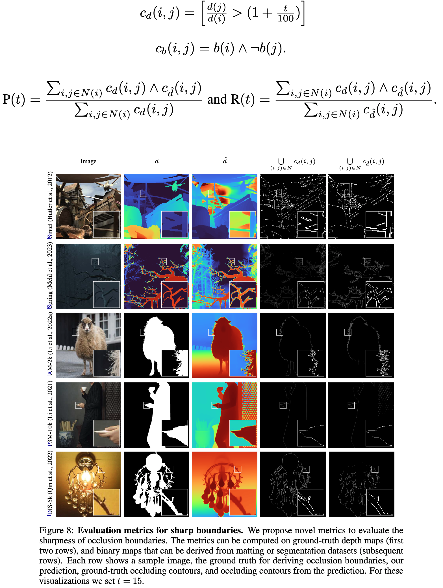

Depth Pro
Zero-shot monocular depth estimation in real-time is one of the most challenging problems in vision. Applications like novel view synthesis from a single image require a strong depth estimation model. The paper DepthPro from Apple presents another model that can perform zero-shot depth estimation on high-resolution images with low latency.
Desired characteristics of a depth estimation model
- It should not be restricted to a single domain and should produce zero-shot depth estimation on any image.
- The model should produce metric depth maps in a zero-shot regime to accurately reproduce object shapes, scene layouts, and absolute scales.
- The model should produce metric depth maps with absolute scale even if no camera intrinsics (such as focal length) are provided with the image. It helps enable novel view synthesis from an arbitrary image.
- The model can operate on high-resolution images and should be able to produce high-quality depth maps even for complex objects like hair, fur, etc.
- It should run with extremely low latency to support applications like view synthesis on demand.
The DepthPro model ticks all the things listed above.
Network
- Uses pretrained Vision Transformers (ViTs) as encoders.
- The key idea is to apply plain ViT encoders on patches extracted at multiple scales and fuse the patch predictions into a single high-resolution dense prediction in an end-to-end trainable mode.
- Two encoders in total: Patch encoder and image encoder.
- The patch encoder is applied on patches extracted at multiple scales, allowing the model to learn scale-invariant representations as weights are shared across scales.
- The image encoder is applied to the whole image, down sampled from the original resolution to the resolution accepted by the base encoder (384 x 384 in this case). The image encoder anchors the patch predictions in a global context.
- The network operates at a fixed resolution of 1536 × 1536 chosen as a multiple of the ViT’s 384×384.
- The original image with a resolution of 1536 x 1536 is processed with two more down sampled resolutions of 784 x 784, and 384 x 384. For each resolution, the image is divided into patches of size 384x384. At each scale, the patches are fed into the patch encoder that produces a feature tensor at a resolution of 24 × 24 per input patch. Intermediate features for the finest scale are also extracted to capture fine-grained details.
- The feature patches are then merged into maps and are fed into a DPT-like decoder module.

Training Objectives
- The network f predicts a canonical inverse depth image
C = f (I)for an input image I. The dense metric depth map is then obtained as Dm = fpx / wC, where fpx is the focal length andwis the width. - All objectives use canonical inverse depth as it prioritizes areas close to the camera over farther areas or the whole scene. This supports visual quality in applications such as novel view synthesis.
- For all metric datasets, the authors compute mean absolute error (MAE) per pixel
iand discard pixels with an error in the top 20% per image for real-world (not for synthetic) datasets. - For all non-metric datasets (i.e., those without reliable camera intrinsics or inconsistent scale), the authors normalize predictions and ground truth via the mean absolute deviation from the median before applying a loss. They also define a multi-scale derivative loss over M scales. The ∇∗ indicate a spatial derivative operator ∗, such as Scharr or Laplace (L), and
pis the error norm. The scalesjare computed by blurring and down sampling the inverse depth maps by a factor of 2 per scale.

I did not find this in the code, but I have asked the authors to give some implementation details. Let us see how it goes.
Training Curriculum
The authors note down three important observations before launching a training run: * Training on a large mix of real-world and synthetic datasets improves generalization. * Real-world datasets are messy, and many times the labels are noisy (missing areas, mismatched depth, or false measurements on object boundaries.) * Predictions get sharper throughout the training.
Based on these observations, the authors design a two-stage training curriculum. In the first stage, they aim to learn robust features that allow the network to generalize across domains, and train the model on a mix of all labeled training sets. They use MAE for the metric datasets and the normalized MAE for non-metric datasets. They also apply scale-and-shift-invariant loss on gradients, but only to synthetic datasets.
The second stage of training is designed to sharpen boundaries and reveal fine details in the predicted depth maps. Given that the synthetic dataset provides high-quality pixel-accurate ground truth, the authors use it to minimize the effect of inaccurate ground truth. MAE is supplemented with Mean Absolute Gradient Error (MAGE), Mean Absolute Laplace Error (MALE), and the Mean Squared Gradient Error (MSGE).
Evaluation metrics for sharp boundaries.
- Common benchmarks for monocular depth prediction rarely take boundary sharpness into account. This may be attributed in part to the lack of diverse and realistic datasets with precise pixel-accurate ground-truth depth.
- The authors aim to leverage existing high-quality annotations for matting, saliency, or segmentation as ground truth for depth boundaries.
- They treat annotations for these tasks as binary maps, which define a foreground/background relationship between an object and its environment. To ensure that the relationship holds, they only consider pixels around edges in the binary map.
- The hypothesis is that if the depth of pixel i and pixel j differs by more than t%, it suggests the presence of an occluding contour between those pixels. Occluding contour c~d(i, j)~, and overall precision and recall for the neighboring pixels are then calculated as shown below:

- The authors report the weighted F1 score with thresholds that range linearly from
tmin = 5totmax = 25, with stronger weights towards high threshold values. - The beauty of this method is that it doesn’t require any manual edge annotations. It only needs pixel-wise ground truth that can be easily obtained for synthetic datasets.
- The authors also apply non-maximum suppression to values of cˆd within the valid bounds of cˆd(i, j) connected components.
- Occluding contours from binary maps are similarly obtained
Focal Length Estimation
- Trained the network to predict focal length to handle cases where the EXIF metadata is either missing or is noisy for the input image.
- The focal estimation head is a small convolutional network that ingests frozen features from the depth estimation network and task-specific features from a separate ViT image encoder to predict the horizontal angular field of view.
- This head is trained after the training for depth prediction is complete.
Results

Limitations
The model is limited in dealing with translucent surfaces and volumetric scattering, where the definition of single-pixel depth is ill-posed and ambiguous.